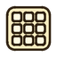

Тайлы и UIГенераторы, создающие целые наборы: 48 тайлов для карт и компоненты интерфейса в четырёх состояниях.
Tiles
Генератор Tiles создаёт полный набор тайлов для автотайлинга: карта 8 x 6, то есть 48 ячеек. Размер набора определяется автоматически.
Режим Tiles больше нельзя выбрать в интерфейсе (переключатель режимов удалён). Генератор по-прежнему запускается для документов или пресетов, сохранённых в режиме Tiles. Для бесшовных тайлов используйте Tile Repeat.
- Используйте квадратный холст («Use a square canvas for the 48-tile generator»).
- Исходный рисунок задаёт цвета и фактуру; генератор создаёт края, углы и внутренние варианты.
- Режим выгрузки Tileset в окне экспорта собирает кадры в один лист.
UI components
Генератор UI (окно UI generation settings, PIXEL UI COMPONENTS; включается флажком Apply UI to Drawing) создаёт «чистые» оболочки компонентов без иконок и текста.
| Компонент | Компонент | Компонент |
|---|---|---|
| Button | Panel | Slider |
| Scrollbar (и Scrollbar thumb) | Toggle | Checkbox |
| Progress Bar | Text Input | Number Input |
| Dropdown | Scroll View | Key Bind Button |
- Состояния: Normal, Hover, Pressed, Disabled. Каждый компонент создаётся по одному разу на состояние («Fixed state set»); одинаковые части разных состояний используются совместно.
- UI kit / UI set - набор собранных примеров всех компонентов; на выходе все четыре состояния каждого.
- Generate separate UI parts - выдаёт каждую часть отдельным обрезанным спрайтом, готовым для UI Image. Предпросмотр показывает собранный компонент.
- Параметры вида: Button rounding, Window rounding, Handle size, Thumb width / height, Style (Flat, Beveled, Double frame и др.), Accent.
- Для детализированных компонентов используйте холст от 64 x 64 пикселей.
- Apply UI to Drawing - флажок в начале окна: включает генератор UI вместо обычных вариаций Drawing.
- 9-slice: в сочетании с инструментом Slice можно задать центральную область для масштабируемого UI.
Параметры геометрии и цвета
| Параметр | Действие |
|---|---|
| Component, Style | Какой компонент и в каком стиле создавать. Для пункта «все компоненты» показывается собранный набор. |
| Shape variations, Seed, New variations | Вариации формы по сиду. |
| Use document canvas size / Output width, Output height | Размер результата: по холсту документа или своё (8-256 px). |
| Width, Height | Доля холста, занимаемая компонентом (0,1-1). |
| Border pixels (0-8), Corner pixels (0-16), Padding pixels (0-12), Detail pixels (1-4) | Толщина рамки, скругление углов, внутренний отступ, размер деталей. |
| Track pixels, Thumb width, Thumb height | Для слайдеров и полос прокрутки: толщина дорожки, размеры ползунка (0 - автоматически). |
| Vertical orientation, Value / position, Scrollbar thumb | Ориентация, значение заполнения/положение, размер ползунка полосы прокрутки. |
| Use palette colors / Body, Outline, Accent | Цвета из палитры или свои. |
Окно показывает «Output: W x H», живой предпросмотр и подсказку использовать холст от 64 x 64 для детализированных компонентов.